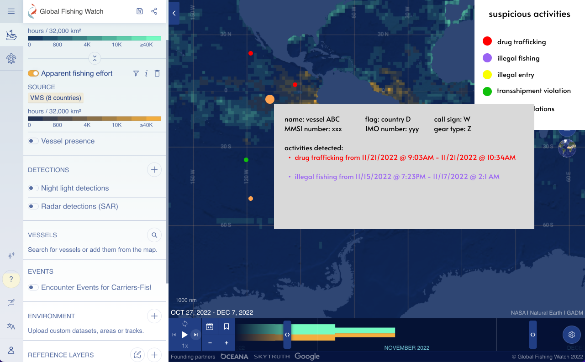
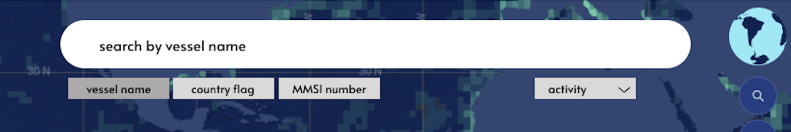
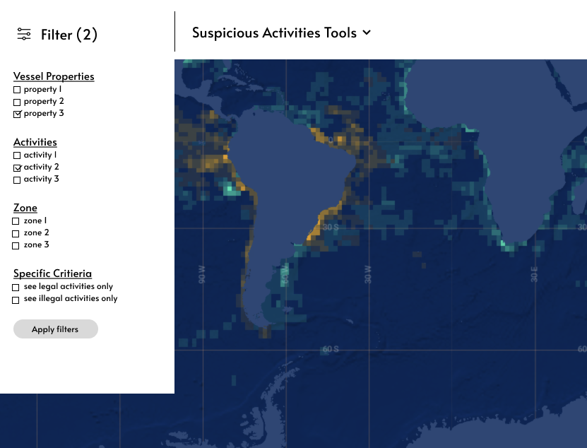
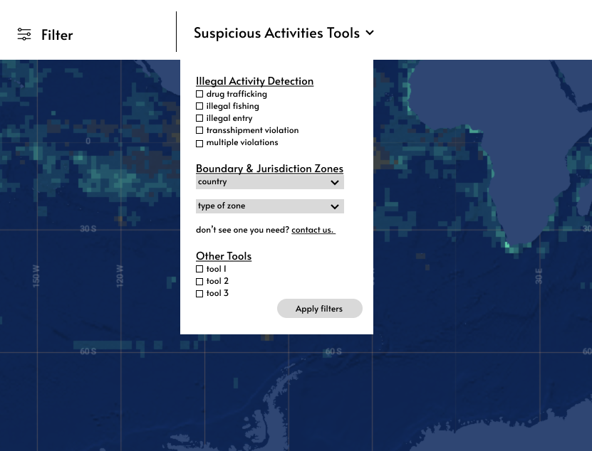

capstone project
Nautical Crime Investigation Services (NCIS) is a startup that specializes in
leveraging cutting-edge technology to enhance national security and maritime
defense. Using artificial intelligence and advanced tracking systems, NCIS conducts
comprehensive risk assessments and detects criminal activities both at sea and on
land.
⛴ ncis-tech.com
👩🏻💻 Web Designer — designed the company website from the ground up to establish the brand
🔍 UX Researcher — identified problems in existing maritime domain awareness platforms and proposed solutions to implement in our own product
setting the scene
Maritime Domain Awareness (MDA): being aware of activities occurring in the marine domain that may impact the security, safety, economy, and environment of the ocean.
Goal: develop understanding and transparency of activities and threats at sea — people, infrastructure, cargo, vessels, and other forms of transport — and collect sufficient, accurate information on ongoing maritime activity to identify threats, make informed decisions, take appropriate action, share information with partners, and respond while minimizing resulting damage.
Automatic Identification System (AIS): transmits a vessel's position, showing it to other vessels and organizations.
Limitations: human analysis is still needed to interpret AIS data, and it's normal and legal for vessels to turn off their AIS signal entirely.
research scope
An AI-powered risk assessment tool that uses machine learning to predict and identify suspicious activities and notify the appropriate organizations to intercept before they occur, improving maritime security. Grace should predict, with high accuracy and certainty, what and where suspicious activities occur and who is involved.
We identified the functional and design requirements for Grace, and recommended which design concepts and principles were essential to include for an MDA platform.
Goal: understand how existing MDA platforms currently support users' needs and what their experience is like with these interfaces.
Questions:
This helped us learn what features are necessary to include in Grace, gave insight into improving user experience, and eliminated assumptions or misunderstandings about users' context, needs, expectations, and abilities, which in turn minimizes human error.
who this is for
Grace should provide sufficient, effective features for each group's specific tasks to satisfy their functional requirements.
Grace aims to succeed in underdeveloped regions, like the sub-region of Africa. Interface design depends heavily on cultural differences, since different cultures face different challenges and opportunities that affect how people perceive and interact with each other and with systems like this one.
The design must incorporate user behaviours and values from these regions and prioritize relatively universal features applicable to all end users, while still meeting functional requirements and providing a good user experience against their design requirements.
testing the assumptions
Human need: bring maritime domain awareness to help detect and deter crimes.
Central task: detect suspicious activity accurately and efficiently.
This review familiarized me with existing MDA platforms to identify what worked and what didn't. I explored GFW's map directly and watched Skylight's tutorial videos, noting strengths and weaknesses and categorizing them as UX/UI-specific or algorithmic, since we were only focusing on UX/UI. This informed the evaluation goals for our usability test:
Used to identify where we could improve MDA platforms on usability and user satisfaction. Participants used GFW and SK to complete the following tasks:
An interview followed each observation, consisting of 9 open-ended questions (see appendix in report).
what we learned
strengths
weaknesses
Time-to-complete doesn't capture accuracy on its own, so these numbers are paired with the qualitative behaviour above rather than read in isolation. Overall, participants completed tasks noticeably faster on Skylight. However, with only one SK user observed (account access was a recruiting barrier), this is a directional signal, not a conclusion.
| Self-rated metric (out of 5) | Average |
|---|---|
| Familiarity (1 = not familiar, 5 = familiar) | 2.75 |
| Navigation difficulty (1 = easy, 5 = hard) | 2 |
| Interpretation difficulty (1 = easy, 5 = hard) | 2.44 |
| Average time to complete (s) | GFW | Skylight |
|---|---|---|
| Task 1: find a named vessel | 87 | 10 |
| Task 2: find a vessel in a prohibited zone | 440 | 120 |
| Task 3: identify an encounter & flags | 340 | 120 |
GFW users had the most difficulty on task 2 with the average time being over 7 minutes and several participants passing 10, and everyone noted assumptions they'd made along the way. That's a strong signal that the interface doesn't give users enough to work with when the judgment call is subjective rather than a straightforward lookup.
Taken together, this pointed to three requirements for Grace:
where this points
To meet the requirements above, we grounded every design recommendation in three concepts:
What the interface actually lets a user do. Grace needs to afford everything GFW and SK already do — detecting and monitoring vessels, reporting vessel info, identifying transshipments and encounters, filtering. Its differentiator is predicting suspicious activity with high certainty, closing the gap between raw data and human interpretation.
The perceivable cues that point users toward those affordances. Grace surfaces a lot of functionality, which risks overwhelming any one user who only needs a couple of features. Signifiers need to be visible without demanding exploration — and, since end users span very different regions and backgrounds, they need to be understood across cultures, not just by one.
How the system communicates the result of an action, so users understand the consequence and adjust — whether that's continuing their workflow or catching and fixing a mistake. It should be immediate and specific enough that users build an accurate mental model of the system the first few times they use it.
putting it into practice
Three low-fidelity prototypes, built on GFW's existing interface, to see these concepts applied to specific problems we observed.
New users have no way of knowing Grace can detect suspicious activity at all, thus, this affordance needs a visible signifier. Vessels predicted to be involved in something suspicious get a bright coloured dot (drug trafficking in red, illegal fishing in purple, illegal entry in yellow, transshipment violations in green, multiple activities in orange), which stands out against a map of plain black dots. Clicking one opens a pop-up with the vessel's info and the flagged activity highlighted in the same colour which provides immediate feedback that reinforces what the colour meant in the first place.

In testing, users typed country abbreviations into GFW's vessel search expecting to filter by flag. Instead, GFW searched for those letters in vessel names. Grace's search should support the properties users actually expect: vessel name, flag, or other identifiers. Keeping it sticky to the top of the interface leans on transfer knowledge from search engines, shopping sites, and streaming platforms which is the first place most users look, and one that matches a top-to-bottom reading pattern across cultures.

Every user struggled to locate GFW's filter feature as the icon alone wasn't enough of a signifier. Pairing icon with text addresses that directly, and matters more here than usual, since not every icon reads the same way across cultures. Dropdowns keep the interface from feeling overwhelming, and checkboxes give immediate feedback. A running count next to "Filter" keeps system status visible even when the dropdown is closed.


Grace surfaces a lot of information, so it needs to be organized around how people approach an interface and how they'll know what happened after they act on it. Affordances fulfill the functional requirement; signifiers support learnability and retention; and how we design both feedback and signifiers determines whether the interface is globally understood, not just understood by the team that built it.
what's left
These lo-fi prototypes are intentionally "throw-away" (meant to generate ideas, not ship as-is). The recommended path forward:
deeper dive
The full thesis, including the research process, findings, limitations, and future directions.